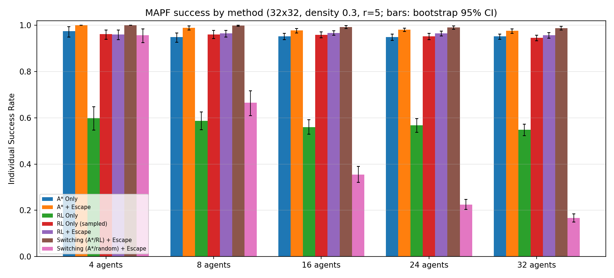
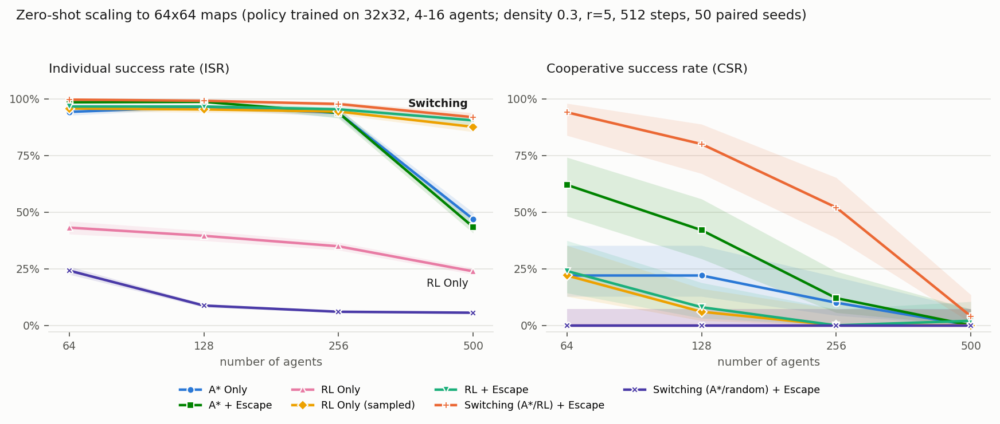

Paired seeds
Every method runs the exact same instances (seeds 90000+). The episode is the unit of analysis, so every comparison is a within-instance comparison.
A per-agent, per-step controller that switches between classical A*, a PPO-trained RL policy, and an intelligent deadlock-escape mode — trained on 32×32 grids, evaluated zero-shot with up to 500 agents on 64×64 maps.
Multi-agent pathfinding (MAPF) under partial observability: each agent perceives only an 11×11 egocentric window (observation radius r = 5) — no global map, no communication, no central controller. An agent knows only its own goal coordinates.
The environment is POGEMA 1.4.0: grid worlds with 5 actions (stay / up / down / left / right), vertex and edge collisions blocked, and finish-and-vanish goal semantics. Under these constraints, pure planners freeze in congestion and pure learned policies oscillate — the interesting question is when to use which.
Building on “When to Switch” (Skrynnik et al., IEEE TNNLS 2024), which alternates between classical planning and RL, this project adds a third mode — intelligent deadlock escape — and an adaptive controller that picks a mode for every agent at every step:
A random safe move — avoiding obstacles, visible agents, and stepping back — held for 3 steps. It breaks the symmetric stand-offs that trap both planners and policies.
An actor-critic CNN trained with PPO on multi-agent interference. Radius-agnostic pooling means the network never sees the map size — the policy is map-size agnostic by construction.
Optimal and cheap on the agent's accumulated obstacle-memory map — unknown cells assumed free, replanning lazily as the map fills in.
Training: 8,000 episodes on 32×32 grids (density 0.3, agent mix {4, 8, 16}, 256-step horizon) — about 1.5 hours on Apple silicon. PPO with GAE, minibatches, and proper truncation bootstrapping; reward is distance-progress shaping plus a goal bonus.
Seven configurations, 100 paired episodes per agent count — every method runs the exact same instances. At 16/24/32 agents, switching beats the strongest baseline (A* + Escape) with exact McNemar p = 0.012 / 0.0026 / 0.0005. The 24- and 32-agent settings are themselves zero-shot: training saw at most 16 agents.
32×32 grid · density 0.3 · r = 5 · 256 steps · 100 paired episodes — CSR is the fraction of episodes where all agents reach their goals
The learned policy is load-bearing. Replacing RL with a random policy inside the same switcher (the ablation) collapses — 89:0 discordant episodes at 32 agents. As congestion grows from 4 to 32 agents, the switcher's mode mix shifts from A* 74% → 14% and RL 23% → 73%.
Honest trade-off: at 32 agents, makespan is +12 steps vs. A* + Escape (p = 0.02) — switching trades a little speed for far more completed episodes.

evaluate.py (checkpoints/results.png).The 32×32-trained checkpoint, evaluated unchanged at the scale of the original paper (64×64 maps, up to 500 agents). 50 paired seeds per setting, 512-step horizon. Switching posts the best individual success rate (ISR) at every agent count.
64×64 grid · density 0.3 · r = 5 · 512 steps · 50 paired seeds — ISR is the fraction of agents that reach their goals
Switching has the best ISR at all four agent counts and is the only method with substantial complete-episode success at 256 agents — 26/50 episodes solved vs. 6/50 for the next best. CSR (solved/50): 47 / 40 / 26 / 2 vs. A* + Escape's 31 / 21 / 6 / 0.
A* falls from 94% to 47% ISR at 500 agents, where roughly 17% of free cells are occupied. The switcher responds by design: its A* share drops to 1.4% of agent-steps at that density.
Greedy action selection locks the RL policy into oscillations (≤ 43% ISR everywhere), while sampling from the same network holds 87.6% at 500 agents — stochasticity itself breaks ties.
Statistically: switching beats A* + Escape with McNemar p = 0.0001 at 64 agents (17:1), p = 0.0002 at 128 (22:3), and p < 0.0001 at 256 (21:1). At 500 agents CSR saturates near zero for everyone (2:0, p = 0.5 — no power) and the signal is ISR: +48.5 points, p = 0.0001. At 128 agents the +0.5-point ISR difference is not significant (p = 0.22, a ceiling effect) — the significant test there is CSR.
Matching the paper's scale — with a caveat. This reproduces the original paper's headline finding at its own scale: their ASwitcher exceeds 80% success at 500 agents; our switcher reaches 91.9% ISR — zero-shot from a 32×32-trained model. But the paper's 500-agent instances are maze and warehouse maps from the MovingAI benchmark, while ours are uniform-random grids. We match the paper's scale, not its exact benchmark maps.

Share of agent-steps spent in each mode on 64×64 maps. As congestion grows, the controller drains A* and leans on RL — and the escape mode's share climbs steadily, from 10% to 26% of all steps.
Percent of agent-steps per mode · 64×64 · 50 paired seeds
Every method runs the exact same instances (seeds 90000+). The episode is the unit of analysis, so every comparison is a within-instance comparison.
Complete-success comparisons use the exact McNemar test on discordant episode pairs — the right test for paired binary outcomes.
ISR differences use sign-flip permutation tests with bootstrap confidence intervals; proportions carry Wilson CIs.
pytest coverage of observation alignment, A* optimality, deadlock detection, a hand-checked GAE computation, determinism, and more.
# pinned dependencies pip install "numpy<2.0" "pydantic<2.0" gymnasium==0.28.1 torch matplotlib pytest pip install pogema==1.4.0 --no-build-isolation # run the 17 unit tests python -m pytest tests -q # train (resumable; ~1.5 h on Apple silicon) MAX_HOURS=3.5 python train.py # evaluate — 32×32, 100 paired episodes EPISODES=100 AGENTS=4,8,16,24,32 python evaluate.py # evaluate — 64×64 zero-shot, up to 500 agents CKPT_DIR=checkpoints_64 MAP_SIZE=64 AGENTS=64,128,256,500 MAX_STEPS=512 EPISODES=50 SKIP_SWEEP=1 python evaluate.py
Training and evaluation are configured through environment variables (SEED, AGENT_MIX, MAP_SIZE, …); training is resumable from checkpoint.